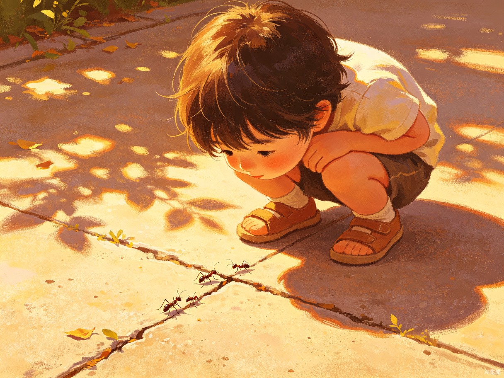
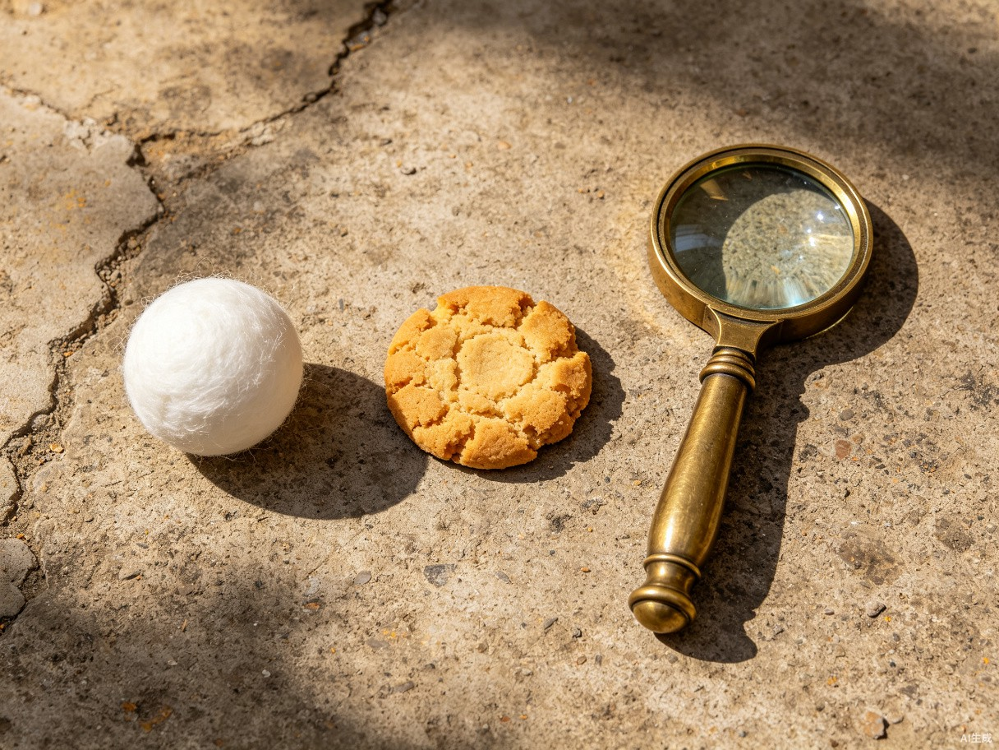
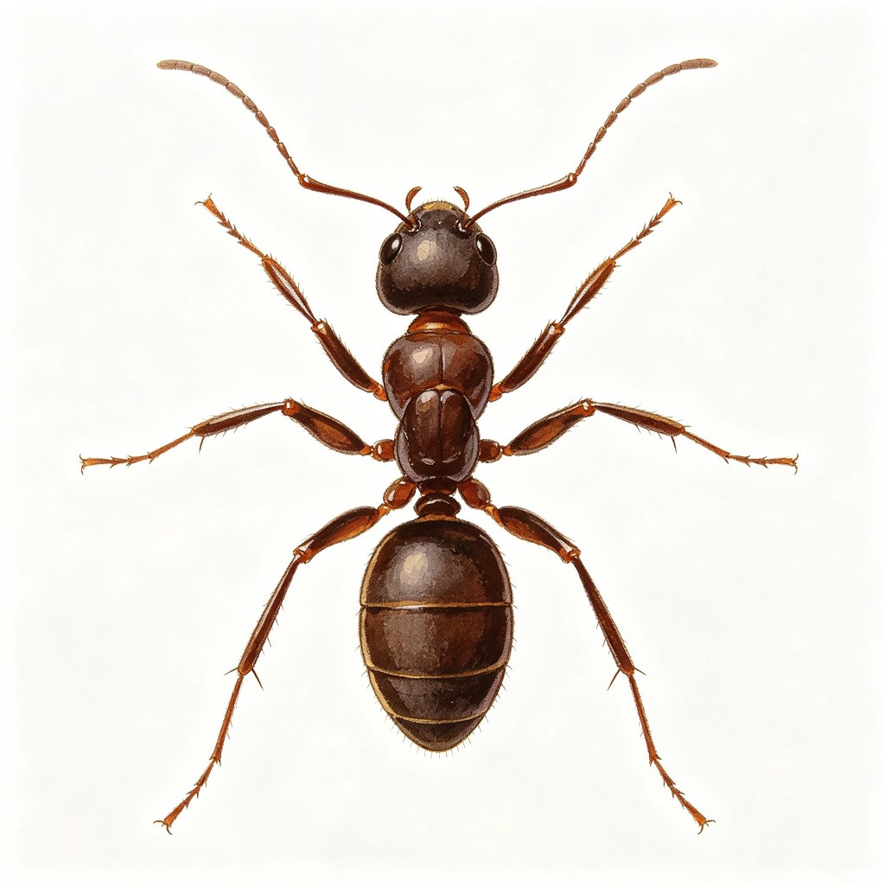

把那个闷热午后，完整搬进手机屏幕
长大后再也回不到蹲在地上看蚂蚁的下午。没场地、没樟脑球、也没那个闲心。市面上的蚂蚁游戏要么给蚂蚁安上数值和关卡让人肝进度，要么就是单调点击，谁都没有还原"蹲在地上逗蚂蚁"那种无目的、无胜负、纯粹被好奇心牵着走的快乐。这款产品想找回的，就是那种快乐本身。
几乎所有人都有同样的童年记忆——蹲在水泥地上，用樟脑球画个圈，看蚂蚁绕来绕去找不到出口。这个游戏就是从那个画面长出来的：把那根樟脑球、那群蚂蚁、那个闷热午后，完整搬进了手机屏幕里。

一款手机/平板触控互动游戏（同时提供网页版和 Android APP）。没有分数、没有关卡、没有失败，打开就玩，关掉就走——你的手指就是那根樟脑球，屏幕就是那片水泥地。
有时候你就是只想蹲着看看蚂蚁
有童年"玩蚂蚁"记忆的成年人，想找个零压力的东西放空几分钟；也适合给小朋友当无伤害的自然观察玩具。
通勤、排队、午休、睡前，任何想放空的碎片时间。单手拇指操作，打开即玩，随时放下，没有进度焦虑。
想重温童年乐趣只能靠记忆；真去户外玩蚂蚁不现实也不环保；现有蚂蚁游戏全都在比分数、闯关卡、养数值，把"看蚂蚁"这件最放松的事变成了又一个待办事项。没有一款产品愿意承认：有时候你就是只想蹲着看看蚂蚁，什么都不图。
樟脑球
画线画圈，把蚂蚁困住，看它慌张绕行
饼干
撒碎屑放整块，看蚂蚁循味聚集协同搬运
放大镜
凑近观察六足细节，停留聚焦灼烧惊逃

蚂蚁不会被你"通关"，你也不会"输"。
这可能是市面上最反内卷的游戏。
情绪价值与技术亮点
反内卷的掌中童年
这是市面上少见的、明确"反内卷"的游戏。没有分数、没有排名、没有失败结算——蚂蚁不会被你"通关"，你也不会"输"。
三种工具随意组合出不同的恶作剧：用樟脑球画线把蚂蚁困在圈里，看它慌张绕行；撒一把饼干碎屑，看蚂蚁循着气味一只只聚过来叼走；举起放大镜，既能凑近看清蚂蚁六足行走的细节，也能停留聚焦——光斑一亮，蚂蚁惊慌四散，跑不掉的就会变成焦黑。
这些操作立刻让人想起儿时那些混合着好奇、顽皮和一丝"邪恶"的复杂情绪，这正是游戏的灵魂。
蚂蚁不再是克隆体
每只蚂蚁都有独立的行为状态：有的在随机游走，有的循味觅食，有的正扛着饼干往边缘挪，有的被光斑吓得加速狂奔，有的已经焦黑不动。它们用代码逐只绘制而非套用图片，有眼睛、有触角摆动、有步态变化——放大镜下能看清这些细节。
搬运大块饼干时蚂蚁们会凑够人数才协同抬起，樟脑线画在搬运路线上它们会试图绕开。蚂蚁和蚂蚁不一样，每次打开都是新的微型小剧场。

wander 随机游走 · 樟脑线避障 · 碰头打招呼 → seeking 朝目标平滑转向 → carrying 扛饼干往边缘挪 → fleeing ×1.8 加速逃跑 → scorched 焦黑不可逆